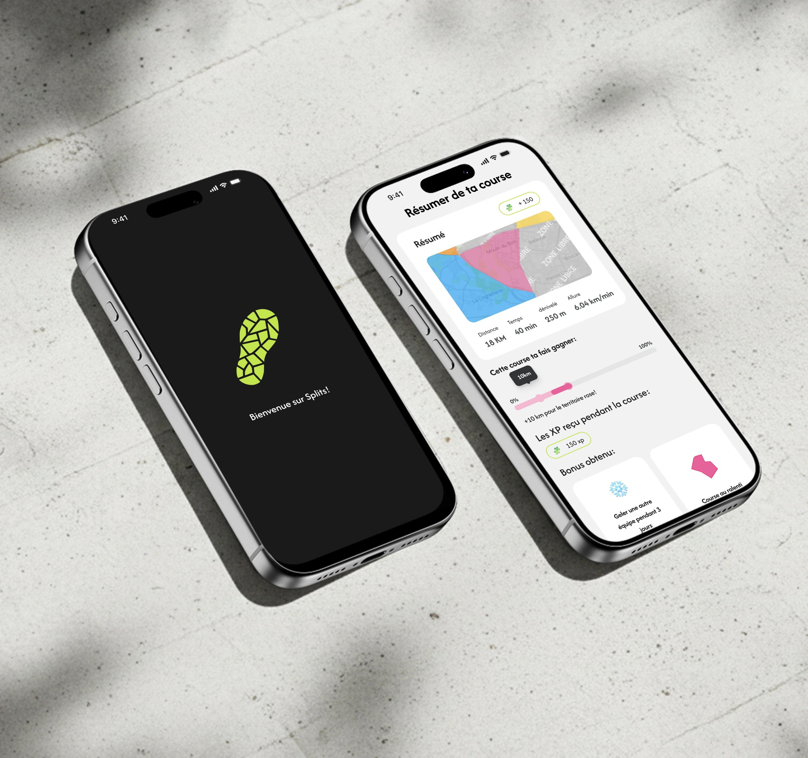

Bonjour, je suis
La urine Gar
urine Gar reau
reau
 UX/UI
UX/UI  designer
designer


Transformer la complexité en parcours fluides et intuitifs.




Module d'import
Stage chez un éditeur d'ERP pour l'agroalimentaire : repenser la migration des données en un parcours fluide et 100% autonome.
Curiosité, détails & rigueur.
Créer a toujours fait partie de moi : dessin, couture, poterie, crochet… Autant de pratiques qui ont aiguisé mon attention aux formes, aux matières et aux détails. Puis les jeux vidéo m'ont ouvert la porte du numérique — et Figma a été une révélation.
En savoir plus


À propos
Garreau Laurine
Créer a toujours fait partie de moi. Dès mon plus jeune âge, j'ai exploré différents médiums : dessin, couture, poterie, peinture, crochet, création de maisons miniatures… Autant de pratiques qui ont aiguisé mon attention aux formes, aux matières et aux détails.
Cette curiosité s'est naturellement étendue au numérique. Les jeux vidéo ont été ma première porte d'entrée, éveillant mon intérêt pour les parcours utilisateur, l'ergonomie et la façon dont une interface peut guider intuitivement. À l'École de design Nantes Atlantique, la découverte de Figma a été une révélation : j'y ai trouvé un équilibre parfait entre réflexion, structure et création.
Aujourd'hui, je conçois des interfaces en cherchant constamment l'équilibre entre esthétique, lisibilité et usage, avec un soin particulier porté à la cohérence et aux détails.
Curieuse et en apprentissage permanent, je recherche une alternance en UX/UI design dans le cadre de mon Master de deux ans à partir de septembre 2026, pour développer mes compétences au sein de projets concrets et enrichissants.
Curiosité & force de proposition
Veille continue, expérimentation d'outils et capacité à proposer des solutions pertinentes et innovantes.
UI & design inclusif
Interfaces esthétiques et centrées sur l'humain, hiérarchie visuelle et normes d'accessibilité (RGAA) pour un web ouvert à tous.
Esprit d'analyse
Comprendre des problématiques complexes, structurer l'information et prendre des décisions de design argumentées.
Design system
Interfaces cohérentes et maintenables grâce à des composants réutilisables et des règles UI claires.
Prototypage & tests
Wireframes et prototypes interactifs (Figma), tests utilisateurs pour valider les parcours et améliorer l'expérience.
Collaboration & communication
Travail en équipe pluridisciplinaire, animation d'ateliers, échanges avec clients et parties prenantes.
Recherche utilisateur
Entretiens, observations terrain, benchmark et analyse des besoins pour orienter les choix de conception et réduire les frictions.
Autonomie & rigueur
Organisation, gestion des priorités et suivi de projet, en contexte professionnel et académique.
Travaillons ensemble
Merci
Une alternance, un projet ou simplement une question ? Laissez-moi un message, je vous réponds rapidement.
- E-mailgarreau.laurine@gmail.com
- Téléphone07 69 91 05 76
- LinkedInlaurine-garreau ↗